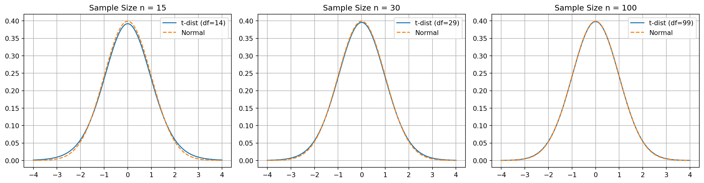

flowchart TD A["Population with true proportion p"] --> B["Select a random sample"] B --> C["Count successes in the sample"] C --> D["Compute the sample proportion"] D --> E["Repeat the sampling process"] E --> F["Distribution of sample proportions"] F --> G["Shape: approximately normal"] F --> H["Center equals p"] F --> I["Spread depends on p and n"]
Statistics Session 05: Sampling
Sampling
statistics
Agenda
- Sampling
- Confidence Intervals
- Hypothesis Testing
- Storytelling With Data
Sampling
Population vs. Sample
In statistics:
- a population is the full group we care about (all customers, all transactions, all students, all calls).
- a sample is a smaller, representative portion of that population.
For example, when a market research company measures TV viewership, the population is every viewer, but the sample is only the households that have a Nielsen people-meter installed.
The goal is to learn something about everyone by studying just the selected few.
Why Not Measure Everyone?
At first glance, it may seem logical to “measure everything” But in reality, studying an entire population is often:
- Too expensive
- Too time-consuming
- Physically impossible
- Damaging to the items being measured (quality control settings)
Imagine you want to understand student attitudes toward academic integrity at ACA.
You could send a survey to all students, but:
- Not everyone will respond.
- Collecting, cleaning, and processing thousands of responses would take weeks.
- In many cases, a properly selected sample (e.g.,
15–25%of students) is enough to accurately represent the entire student body.
A similar real-world example from the textbook shows how a college committee surveyed only a subset of students yet confidently inferred the attitudes of the whole institution.
Why Businesses Prefer Sampling?
Sampling allows organizations to:
- Save money and time
- Check quality without damaging products
- Launch decisions faster
- Work with continuous data streams when populations grow too fast
- Avoid unnecessary measurements when additional data adds little value
In telecom, banking, or marketing environments—like you often cannot measure every interaction or manually label every event. Sampling helps you make reliable conclusions with controlled effort.
The Risks of Sampling
Sampling introduces uncertainty. Estimates may deviate from the true population values.
However:
- Statistics gives us tools to quantify this risk
- Many sampling errors are small and predictable
- Well-designed sampling keeps accuracy high while effort stays low
Sampling is not a shortcut. It is a scientifically grounded method for making reliable decisions when full measurement is unnecessary, impractical, or impossible.
In both academic settings and real business operations, sampling enables accurate, fast, and cost-effective insights.
Types of Sampling
There are many options available for gathering samples from a population. The two basic types that we will discuss are:
- probability sampling
- nonprobability sampling
Probability Sampling
A probability sample is a sample in which each member of the population has a known, nonzero, chance of being selected for the sample.
There are five main types of probability sampling techniques statisticians use:
- simple random
- systematic
- stratified
- cluster
- resampling
Simple Random Sampling
A simple random sample is a sample in which every member of the population has an equal chance of being chosen.

Systematic Sampling
In systematic sampling, every k-th member of the population is chosen for the sample. The value of k is determined by dividing the size of the population (N) by the size of the sample (n).
But how do you know whcih value of k to choose? The value of k is the systematic sampling constant:
\[k = \frac{N}{n}\]
where:
- N: Size of the population
- n: Size of the sample
Using my academic integrity survey, with a population of 1,800 students and a sample of 10:
\[k = \frac{N}{n} = \frac{1,800}{10}=180\]
From a listing of the entire population, I would choose every 180th student to be included in the sample.

Systematic sampling is often easier to implement than a simple random sample.
Problem
A problem can arise if the population contains a repeating pattern that aligns with the interval (k). This periodicity can produce a biased sample.
Example: selecting data every 4th week in an 8-week term may always fall on midterms or finals, leading to inflated study-hour data.
Solution
The first selected unit does not have to be the first entry.We can randomly choose a starting position and then pick every (k)-th observation after that.
Stratified Sampling
Stratified sampling is used when specific subgroups within a population differ in ways that are important to the analysis. If these subgroups are not represented proportionally in the sample, the results may become biased—even when random sampling procedures are used.
Consider a cybersecurity compliance study within a large technology company. Previous internal audits show that senior engineers tend to follow security protocols far more consistently than junior engineers. If we rely on simple random or systematic sampling, it is possible—simply by chance—that 45% of the selected employees will be senior engineers, even though they represent only 15% of the workforce. Such a sample would lead us to overestimate overall compliance levels.
Stratified sampling prevents this type of distortion. The population is divided into meaningful groups (such as junior, mid-level, senior, and management), and each group is sampled in proportion to its actual size. This ensures that the final sample mirrors the true composition of the population and that no subgroup with unusually high or low compliance influences the results disproportionately.
In contexts such as academic integrity studies, organizational culture assessments, customer-segmentation research, or ACA-style analytics projects, stratified sampling provides a more balanced, representative, and trustworthy basis for drawing conclusions.
| Stratum (Role Level) | Population Size | Population % | Sample Size (n = 200) | Calculation |
|---|---|---|---|---|
| Junior Engineers | 1,200 | 40% | 80 | \(0.40 \times 200\) |
| Mid-Level Engineers | 900 | 30% | 60 | \(0.30 \times 200\) |
| Senior Engineers | 450 | 15% | 30 | \(0.15 \times 200\) |
| Management | 450 | 15% | 30 | \(0.15 \times 200\) |
| Total | 3,000 | 100% | 200 | — |

Cluster Sampling
Cluster sampling divides the population into mutually exclusive groups—called clusters— where each cluster is intended to be a small-scale representation of the entire population. Instead of sampling individuals directly, we randomly select entire clusters and then either survey every member of those clusters or take a simple random sample within them.
Clusters are often based on geography or natural groupings to simplify data collection. For example, in an academic integrity study, classrooms at specific times of day could serve as clusters. Once a set of classrooms is randomly selected, all students in those rooms (or a sample of them) can be surveyed.
A common source of confusion is the difference between strata and clusters:
Strata are groups whose members share a common characteristic (e.g., all freshmen). Strata are typically homogeneous within each group and are used to ensure proper representation in the sample.
Clusters, by contrast, are “mini-populations”—often heterogeneous mixtures of different types of individuals (e.g., a classroom containing freshmen, sophomores, juniors, and seniors). The goal is convenience and efficiency, not homogeneity.
Cluster sampling is widely used in business settings, especially when test-marketing new products. Companies select cities or regions as clusters and gather feedback from customers within those areas. When designed carefully, cluster sampling provides a cost-effective way to collect a probability sample while maintaining representativeness.

Resampling (Bootstrap)
Resampling is a statistical approach in which multiple samples are repeatedly drawn from an observed dataset to better understand the variability of a statistic. One of the most widely used resampling techniques is the bootstrap method, introduced by Bradley Efron at Stanford University.
Bootstrapping offers a practical, assumption-light method for estimating the uncertainty around statistical measures.
Bootstrapping works by drawing many samples with replacement from the original dataset. For each resample, we compute a statistic of interest—such as a mean, median, proportion, or variance. By repeating this process thousands of times, we obtain a distribution of the statistic, which helps us understand how much it varies and where the true population value is likely to fall.
Bootstrapping is flexible and powerful. Unlike many traditional statistical methods, it does not require strong assumptions about the underlying population distribution. It can be applied to estimate population parameters, standard errors, and measures of uncertainty for a wide variety of statistics.
Website Conversion Rates (Digital Marketing)
A marketing team measures the conversion rate of a landing page based on 600 user sessions. They use bootstrapping to repeatedly resample these outcomes and estimate the distribution of the conversion rate. This helps them compare campaign performance confidently without relying on theoretical formulas.
Model Performance Metrics (Machine Learning)
A data science team evaluates a predictive model using a dataset of 10,000 labeled observations. They apply bootstrapping to estimate the variability of accuracy, recall, or AUC scores. This produces more reliable estimates of model performance under different resampling conditions.

Simple Random vs Systematic vs Stratified vs Cluster

Nonprobability Sampling
A nonprobability sample is a sample in which the probability of a population member being selected for the sample is not known.
A common type of nonprobability sample is a convenience sample. This type of sampling is useful when you are simply trying to gather some general information about the population.
- Convenience sample: A convenience sample is used when members of the population are chosen to become part of the sample simply because they are easily accessible.
- Internet Poll: Most individuals who participate in Internet polls have very little statistical training. They are impressed when they see thousands of responses recorded in real time and tend to believe the results.
Sampling and Nonsampling Errors
When we rely on a sample instead of measuring an entire population, some level of error is unavoidable. Population values—known as parameters—are typically unknown, so we use statistics from our sample to estimate them. Because a sample represents only part of the population, the statistic will almost never match the parameter exactly. This difference is called sampling error, and it reflects the natural variability that occurs in any sampling process.
\[\text{Sampling Error}=\bar{x}-\mu\]
where
- \(\bar{x}:\) sample mean
- \(\mu:\) population mean
Sampling error is expected and tends to decrease when the sample size increases. However, data collection can also be affected by nonsampling errors, which arise from factors unrelated to the sampling procedure. These include biased survey questions, measurement mistakes, data entry errors, or low response rates. Unlike sampling errors, nonsampling errors cannot be reduced simply by collecting more data.
Recognizing the difference between sampling and nonsampling errors is essential for evaluating how accurate and reliable a study’s conclusions are.
Sampling Distribution
Distirbution of the Mean with Finite Population
Up to this point, we have assumed that samples are drawn from a very large or effectively infinite population. In such cases, the sample represents only a tiny fraction of the population, so the usual standard error formula is appropriate.
However, when the population is finite and the sample makes up a noticeable portion of that population, the standard error of the mean must be adjusted. This situation arises when the ratio of sample size to population size: \(n/N \gt 5\).
In these cases, we use the finite population correction factor (FPC) to account for the fact that sampling without replacement reduces variability. The corrected standard error becomes smaller because the sample is capturing a larger portion of the population.
For example, if a population contains 100 individuals, and we sample more than 5 of them (i.e., \(n > 5\)), the finite population correction factor should be applied to compute an accurate standard error.
Ignoring the correction would overestimate the sampling error and lead to incorrect probability calculations.
\[ \sigma_{\bar{x}} = \frac{\sigma}{\sqrt{n}} \sqrt{\frac{N - n}{N - 1}} \]
where:
- \(\sigma:\) Population standard deviation
- \(N:\) Population size
- \(n:\) Sample size
- \(\frac{N-n}{N-1}:\) finite population correction factor.
This adjustment ensures that probability calculations and confidence intervals accurately reflect the reduced sampling variability when the sample is a sizable proportion of the population.
Example
Consider a consulting firm serving 120 clients. Historically, the average satisfaction rating is 7.3. A recent survey of 50 clients shows an average of 7.8.
Because the sample is more than 5% of the population, the finite population correction must be applied:
- The sample represents a large share of all clients.
- Sampling without replacement reduces variability.
- Using the FPC provides a more accurate standard error.
- A low resulting probability suggests the true population mean has improved.
This type of adjustment is essential in practical business settings:
- small customer lists
- internal employee populations
- specialized cohorts
Effect of the Correction Factor
The following table illustrates how the standard error changes when the population size is 100 and the sample size increases. As \(n\) grows, the correction factor becomes smaller, reducing the standard error significantly.
| Sample Size (n) | Standard Error | Finite Correction Factor | Standard Error with FPC |
|---|---|---|---|
| 40 | 0.111 | 0.778 | 0.086 |
| 60 | 0.090 | 0.636 | 0.057 |
| 80 | 0.078 | 0.449 | 0.035 |
| 100 | 0.070 | 0 | 0 |
As shown, when the sample covers the entire population (\(n = 100\)), the corrected standard error becomes zero, as no sampling error exists in a census.
Distribution of the Proportion
In many real-world applications, we analyze proportions rather than means.
For example the % of:
- customers who churn
- voters who support a candidate
- households that watch a specific media event.
In these situations, the statistic of interest is the sample proportion, and its behavior across repeated samples is described by the sampling distribution of the proportion.
Suppose a national streaming analytics firm claims that 52% of U.S. households watched a large live sports event in 2024. A media agency wants to verify the claim and surveys 300 randomly selected households. In the sample, 147 households watched the event.
To evaluate whether this sample supports the firm’s claim, we check whether the sample size is large enough to use the normal approximation to the binomial distribution.
The following conditions must hold:
\[ np \ge 5 \]
\[ n(1 - p) \ge 5 \]
Using the claimed proportion \(p = 0.52\) and sample size \(n = 300\):
\[ np = 300(0.52) = 156 \ge 5 \]
\[ n(1 - p) = 300(0.48) = 144 \ge 5 \]
Thus, the normal approximation is appropriate.
Sample Proportion
The sample proportion is:
\[ \hat{p} = \frac{x}{n} \]
For this survey:
\[ \hat{p} = \frac{147}{300} = 0.49 \]
Standard Error of the Proportion
The standard error reflects how much sample proportions vary across repeated samples:
\[ \sigma_{\hat{p}} = \sqrt{ \frac{p(1 - p)}{n} } \]
z-Score for the Sample Proportion
To evaluate how far the sample proportion is from the claimed population proportion:
\[ z_{\hat{p}} = \frac{\hat{p} - p}{\sigma_{\hat{p}}} \]
A large positive or negative value indicates that the observed sample proportion would be unlikely if the claimed population proportion were correct.
The sampling distribution of the proportion allows us to determine how probable it is to observe a sample proportion like the one in our study. If the probability is small, the sample provides evidence against the population claim. If the probability is reasonable, the sample is consistent with the claim.
In this example, the observed sample proportion (0.49) is close to the claimed population proportion (0.52), and with a moderate sample size, the difference is well within the range of expected sampling variability.
Confidence Intervals
One of the most important roles statistics plays in today’s world is to:
- gather information from a sample,
- use that information to make a statement about the population from which the sample was chosen.
Understanding confidence intervals helps quantify how certain we are about the population parameter based on sample data.
Point Estimates
A point estimate is a single value that best describes the population parameter of interest.
The most common point estimates are:
- the sample mean (\(\bar{x}\))
- the sample proportion (\(\hat{p}\))
Point estimates are easy to calculate, but they provide no information about the accuracy or uncertainty of the estimate. They simply give one number a
“best guess”of the true population value.
NoteConfidence Interval
A confidence interval for the mean is an interval estimate around a sample mean that provides a range within which the true population mean is expected to lie.
NoteConfidence Level
A confidence level is the probability that the interval constructed from sample data will contain the population parameter of interest.
The purpose of generating a confidence interval is to provide an estimate for the true population mean by combining:
- the sample mean \(\bar{x}\)
- the critical \(z\)-value
- the standard error \(\sigma_{\bar{x}}\)
A 90% CL means that 90% of such intervals—constructed from repeated samples would contain the true population mean.
Typically, confidence levels are set by the statistician at 90% or 95% and will occasionally go as high as 99%.
| Confidence Level | α (Significance Level) | α/2 (Each Tail) | Lower zα/2 | Upper zα/2 |
|---|---|---|---|---|
| 90% | 0.10 | 0.05 | -1.645 | 1.645 |
| 95% | 0.05 | 0.025 | -1.960 | 1.960 |
| 99% | 0.01 | 0.005 | -2.576 | 2.576 |
Confidence Intervals for the Mean | known SD
Let’s say we want to construct a confidence interval for the average order size of the ABC customer based on my sample mean of $129.20 with a 90% confidence level. To determine this interval, we need two more pieces of information:
- the sample size: \(\bar{x}\)
- the population standard deviation \(\sigma\)
Suppose the sample mean was based on the 32 orders (\(n=32\)). Also, we’ll assume the population standard deviation is equal to \(\sigma=40.602\)
NoteAbout known Standard Deviation
Usually domain experts are familiar with the value of SD
Standard Error (SE):
\[ \sigma_{\bar{x}} = \frac{\sigma}{\sqrt{n}} = \frac{\$ 40.602}{\sqrt{32}} = \$7.173 \]
Margin of Error (MoE):
A margin of error represents the width of the confidence interval between a sample mean and its upper limit or between a sample mean and its lower limit. Notice that the confidence interval is symmetrical around the sample mean.
\[MoE_{\bar{x}} = z_{\frac{\alpha}{2}}\sigma_{\bar{x}}\]
Confidence Levels:
\[UCL = \bar{x} + MoE\]
\[LCL = \bar{x} - MoE\]
\[ \Downarrow \]
\[MoE_{90} = 1.645 \cdot 7.176 = 11.80\]
\[UCL = 129.2 + 11.8 = 141\]
\[LCL = 129.2 - 11.8 = 117\]
| CL | \(z_{α/2}\) | SE | MoE | LCL | UCL |
|---|---|---|---|---|---|
| 90% | 1.645 | 7.173 | 11.80 | 117 | 141 |
| 95% | 1.960 | 7.173 | 14.06 | 115 | 143 |
| 99% | 2.576 | 7.174 | 18.47 | 110 | 147 |
A
99%confidence interval is even wider than the95%and90%intervals because a greater level of confidence requires covering a larger portion of the sampling distribution.
Sample Means and 90% Confidence Intervals
A confidence interval does not guarantee that the true population mean will fall inside the interval calculated from a single sample. In the example, Sample 1 produced a 90% confidence interval that correctly captured the true population mean of 125. However, Sample 5 produced an interval that entirely missed the true mean.
This outcome is expected. A 90% confidence interval means that the method, when applied repeatedly across many random samples of the same size, will produce intervals that contain the population mean about 90% of the time. It does not mean that any individual interval has a 90% chance of containing the true value, nor does it guarantee that 9 out of 10 intervals from a small set of samples will succeed.
| Sample | Sample Mean | Margin of Error | Lower Limit | Upper Limit |
|---|---|---|---|---|
| 1 | 129.20 | 11.80 | 117.40 | 141.00 |
| 2 | 132.00 | 11.80 | 120.20 | 143.80 |
| 3 | 117.50 | 11.80 | 105.70 | 129.30 |
| 4 | 128.20 | 11.80 | 116.40 | 140.00 |
| 5 | 108.80 | 11.80 | 97.00 | 120.60 |
| 6 | 130.10 | 11.80 | 118.30 | 141.90 |
| 7 | 117.90 | 11.80 | 106.10 | 129.70 |
| 8 | 120.10 | 11.80 | 108.30 | 131.90 |
| 9 | 133.80 | 11.80 | 122.00 | 145.60 |
| 10 | 119.00 | 11.80 | 107.20 | 130.80 |
The key idea: confidence intervals describe the long-run performance of the estimation procedure, not certainty about the result of a single sample.

Confidence Intervals for the Mean | Unknown SD
So far our Confidence Interval examples have assumed that the population standard deviation (\(\sigma\)), is known. In practice, this is rarely the case. Most of the time, we only have access to the sample itself, and we must estimate the population standard deviation using the sample standard deviation, \(s\).
The sample standard deviation can always be computed directly from the data:
\[ s = \sqrt{\frac{\sum (x_i - \bar{x})^2}{n - 1}} \]
Since \(s\) is based on the sample, it is only an estimate of the true population standard deviation. As a result, when \(\sigma\) is unknown, we cannot rely on the normal distribution to calculate a confidence interval for the mean.
Instead, we use the Student’s t-distribution, which adjusts for the uncertainty created by estimating \(\sigma\) with \(s\).
The t-distribution behaves like the normal distribution when sample sizes are large, but it has heavier tails for smaller sample sizes. This accounts for the additional variability that comes from estimating the standard deviation. As the sample size increases, the t-distribution approaches the standard normal distribution.
The overall structure of the Confidence Interval formula remains the same:
- \(\sigma \Rightarrow s\)
normal distribution\(\Rightarrow\)t-distributionz-table\(\Rightarrow\)t-tabe
This adjustment allows us to construct valid confidence intervals in the realistic case where the population standard deviation is not available.
NoteInteresting fact about T-distribution
Please watch this video.
Student’s t-distribution
- A bell-shaped and symmetric, similar to the normal distribution.
- Its exact shape depends on the degrees of freedom, defined as \(n - 1\) for a sample of size \(n\).
- The total area under the curve is
1.0, just like any valid probability distribution. - Because it is wider and flatter than the normal distribution, the critical values from the t-distribution are larger than z-critical values for the same confidence level. This leads to wider confidence intervals, reflecting the extra uncertainty created by estimating the population standard deviation with the sample standard deviation.
- The
t-distributionis actually a family of distributions one for each degree of freedom. As the degrees of freedom increase, the t-distribution becomes more similar to the normal distribution. With more than 100 degrees of freedom, the two are practically identical.

Calculating the Confidence Intervals
As it is mentioned above, the calculation methodology is the same:
- Calculate Sample Mean
- Calcualate the Standard Error
- Calculate the Margin of Error
- Caluclate the Confidence Inervals
Note the Confidence Level/Significance Level (\(\alpha\)) must be given. Let’s assume that the \(\alpha = 0.05\)
Weekly Visitors
The shop owner expects to have more than 90 visiters per week for the sustainable develepment.
| Week | Visitors |
|---|---|
| 1 | 116 |
| 2 | 83 |
| 3 | 89 |
| 4 | 87 |
| 5 | 81 |
| 6 | 109 |
| 7 | 114 |
| 8 | 123 |
| 9 | 102 |
| 10 | 131 |
| 11 | 96 |
| 12 | 74 |
| 13 | 109 |
| 14 | 106 |
| 15 | 118 |
| 16 | 78 |
| 17 | 91 |
| 18 | 98 |
In order to calculate the sample mean and the sample standard deviation we can use excel:
- DF:
COUNT(B2:B19)-1 = 17 - Mean:
AVERAGE(B2:B19) = 100.3 - Standard Deviation | Sample:
STDEV.S(B2:B19) = 16.6 - Critical t-score:
T.INV.2T(alpha, df) = T.INV.2T(0.05,17) = 2.11 - Margin of Error:
CONFIDENCE.T(alpha, sd,n) = CONFIDENCE.T(0.05, 16.6,18) = 8.25
Margin of Error
\[ \hat{\sigma}_{\bar{x}} = \frac{s}{\sqrt{n}} = 3.92 \]
Confidence Levels:
\[UCL = \bar{x} + MoE\]
\[LCL = \bar{x} - MoE\]
\[ \Downarrow \]
\[UCL = 100.3 + 8.25 = 108.55\]
\[LCL = 100.3 - 8.25 = 92.05\]
NoteConclusion
Based on the result we are 95% confident that the true population mean for the number of visits per week is between 92 and 108. Because the entire interval exceeds 90 patients per week, it apears that the financial goals are being met.
NoteRemember
The properties of the confidence intervals using the t-distribution are the same for those constructed using the normal distribtuion:
- Increasing the confidence level will result in a wider (less precise) confidence interval.
- Increasing the sample size will result in a narrower (more precise) confidence interval.
- The margin of error is given by: \(\text{Margin of Error} = t_{\alpha/2} \, \hat{\sigma}_{\bar{x}}\)
Confidence Intervals for Proportions
The confidence interval for the proportion is an interval estimate around a sample proportion that provides us with a range of where the true population proportion lies.
Recall that the proportion data follow the binomial distribution, which can be approximated by the normal distribution under the following condition:
\[np \ge 5 \text{ and } n(1-n) \ge 5\]
where:
- p: probability of a success in the population
- n: sample size
NoteMini Case Study
Suppose the online channel would like to estimate the proportion of customers who are female in order to improve the channel’s advertising effectiveness.
Let’s say from a random sample of 175 customers, 116 were female.
Sample Proportion
\[\bar{p} = \frac{x}{n} = \frac{116}{175}=0.663\]
where:
- x: the number of observations of interest in the sample (successes)
- n: the sample size
To construct a confidence interval, we need the standard error of the proportion.
The true standard error (using the unknown population proportion \(p\)) is:
\[ \sigma_{\bar{p}} = \sqrt{\frac{p(1 - p)}{n}} \]
We do not know \(p\), yet the formula for standard error requires \(p\).
We can use the sample proportion \(\bar{p}\) to approximate \(p\). This gives the approximate standard error:
\[ \hat{\sigma}_{\bar{p}} = \sqrt{\frac{\bar{p}(1 - \bar{p})}{n}} \]
After calculated the standard error, can calculate the 99% confidence interval for the proportion of female shopping customers using MoE and calculating UCL and LCL.
\[ \hat{\sigma}_{\bar{p}} = \sqrt{\frac{\bar{p}(1 - \bar{p})}{n}} = \sqrt{\frac{0.663(1 - 0.663)}{175}} = \sqrt{\frac{0.223}{175}} = \sqrt{0.001274} = 0.0357 \]
\[ \Downarrow \]
\[ UCL_{\bar{p}} = \bar{p} + z_{\alpha/2}\hat{\sigma}_{\bar{p}} = 0.663 + (2.575)(0.0357) = 0.755 \]
\[ LCL_{\bar{p}} = \bar{p} - z_{\alpha/2}\hat{\sigma}_{\bar{p}} = 0.663 - (2.575)(0.0357) =0.571 \]
Based on our sample proportion of 0.663, we are 99% confident that the proportion of female shoppers is between 0.572 and 0.755,
CautionWhy is it wider?
The confidence interval seems wider as we want to be 99% confident of capturing the population proportion we need a wide interval
Determining the Required Sample Size
So far, we have focused on calculating a confidence interval and margin of error for a population when we know:
- The confidence level
- The sample size
- The standard deviation
Now we will try to reverse the process. Instead of computing the margin of error from the sample size, we determine the sample size needed to achieve a desired margin of error, given:
- The confidence level
- The population standard deviation
This procedure is extremely useful because one of the first practical questions in statistical work is: How large should the sample be?
- too large: wastes resources.
- too small: produces estimates that are not precise enough.
We will begin by determining the required sample size for estimating a population mean and proportion.
Sample Size | Estimating Population Mean
TipAt&T Case Study
A major telecom operator in 2024 needed an accurate estimate of average monthly mobile data usage. With heavy-streaming customers generating most of the traffic, the operator aimed to set plans that balance cost and capacity.
To achieve this at a 95% confidence level with a \(\pm2\) GB margin of error, the operator calculated the sample size required to estimate the population mean efficiently and reliably.
Based on internal analytics, the population standard deviation is believed to be \(\sigma = 8\) GB.
In order to identify the Sample Size we need to do minor algebra for MoE Equation:
\[MoE_\bar{x} = z_{\frac{\alpha}{2}} \sigma_{\bar{x}} = z_{\frac{\alpha}{2}} \frac{\sigma}{\sqrt{n}} \Rightarrow \sqrt{n} = \frac{z_{\frac{\alpha}{2}}\sigma}{MoE}\]
\[ n = \left( \frac{z_{\alpha/2}\, 2\sigma}{\text{MoE}} \right)^2 \]
Remember for a 95% confidence level critical z-value would be \(z_{\alpha/2} = 1.96\)
Calculate and round up:
\[ n = \left( \frac{1.96 \cdot 8}{2} \right)^2 = 61.46 = 62 \]
Thus, a sample of 62 customers is required to estimate the average monthly mobile data usage with a 95% confidence interval and a \(\pm2\) GB margin of error.
Sample Size | Estimating Proportion
TipFinTech Case Study: Biometric Login Adoption
A leading FinTech app in 2025 wants to estimate the proportion of users who enable biometric login
(FaceID/TouchID). This metric is crucial for security-feature adoption and for planning future upgrades.
To achieve a 95% confidence level with a \(\pm2\)% margin of error, the company needs to determine the minimum sample size required to estimate this proportion accurately.
A quick pilot test of 200 users revealed that 24% had biometric login enabled, giving
\[\bar{p} = 0.24\]
\[ n = \frac{z_{\alpha/2}^2 \, \bar{p}(1 - \bar{p})}{(MoE_{\bar{p}})^2} \]
For a 95% confidence level, we use:
- \(z_{\alpha/2} = 1.96\)
- \(\bar{p} = 0.24\)
- \(MoE_{\bar{p}} = 0.02\)
Thus
\[ n \approx \frac{(1.96)^2 (0.24)(0.76)}{(0.02)^2} \approx 1402.6 \Rightarrow 1403 \]
A sample of 1,403 users is required to estimate the true proportion of biometric-enabled users within
a 95% confidence interval and \(\pm2\) percentage points of precision.